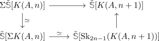

abelian group is colimit of shifts of infinite suspensions of Eilenberg MacLane spaces
Proposition
Let $A$ be an abelian group, then there exists an equivalence
\begin{align*}
A \simeq \mathrm{colim}_{n \in \mathbb{N}} \Omega^n \tilde{\mathbb{S}}[K(A,n)]
\end{align*}
where the map
\begin{align*}
\tilde{\mathbb{S}}[K(A,n)] \rightarrow \Omega \mathbb{S}[K(A,n+1)]
\end{align*}
is given as adjoint to

which is (up to equivalence) the skeleton inclusion.
Proof
map
we want to show that the map
\begin{align*}
\Omega^n \tilde{\mathbb{S}}[K(A,n)] \rightarrow \Omega^{n+1} \tilde{\mathbb{S}}[K(A,n+1)]
\end{align*}
is given an equivalence on $\pi_0$.
Here we may use that stable hurewicz theorem & Hurewicz theorem & isomorphism of skeleton ...
colimit
follows from: